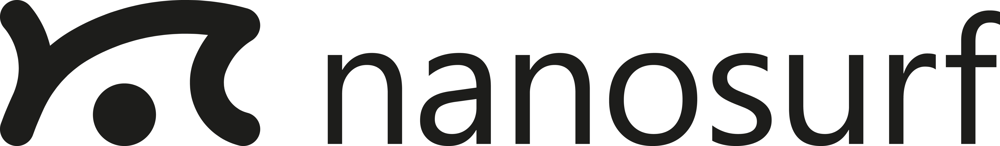
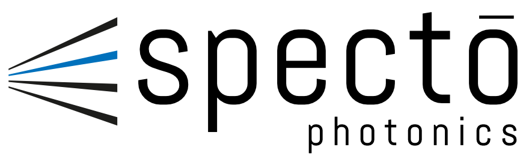
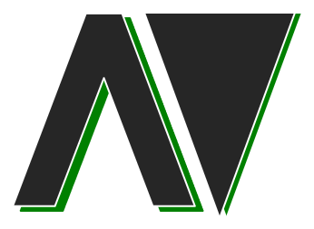

N4M 2027
Sponsors
Our sponsors support the meeting and contribute to the vibrant environment that makes N4M a place for discovery, collaboration, and innovation.
Silver sponsor

Nanosurf
Nanosurf is a premier provider of atomic force microscopy systems, catering to the demands of scientific research, the nanotechnology industry, semiconductor production, and quality control.
Visit website
Specto Photonics
Specto Photonics is a pioneering photonics company developing innovative on-chip Brillouin spectroscopy solutions for non-contact, label-free mechanical characterization of biological samples. By making Brillouin microscopy more compact, accessible, and easy to integrate into existing optical microscopes, Specto enables researchers to investigate the 3D biomechanics of cells, tissues, and biomaterials.
Visit websiteSilver sponsor available
Silver sponsor details to be announced.
Silver sponsor available
Silver sponsor details to be announced.
Bronze sponsor

A5 Science
A5 Science is a French deeptech company specializing in Atomic Force Microscopy (AFM) and nanoscale characterization. We develop advanced AFM methodologies and innovative tools to investigate the structural, mechanical and molecular properties of biological and soft-matter systems. Combining scientific expertise, technological development and customized analytical services, A5 Science supports academic and industrial partners in exploring complex systems at the nanoscale.
Visit websiteBronze sponsor available
Bronze sponsor details to be announced.
Bronze sponsor available
Bronze sponsor details to be announced.
Bronze sponsor available
Bronze sponsor details to be announced.